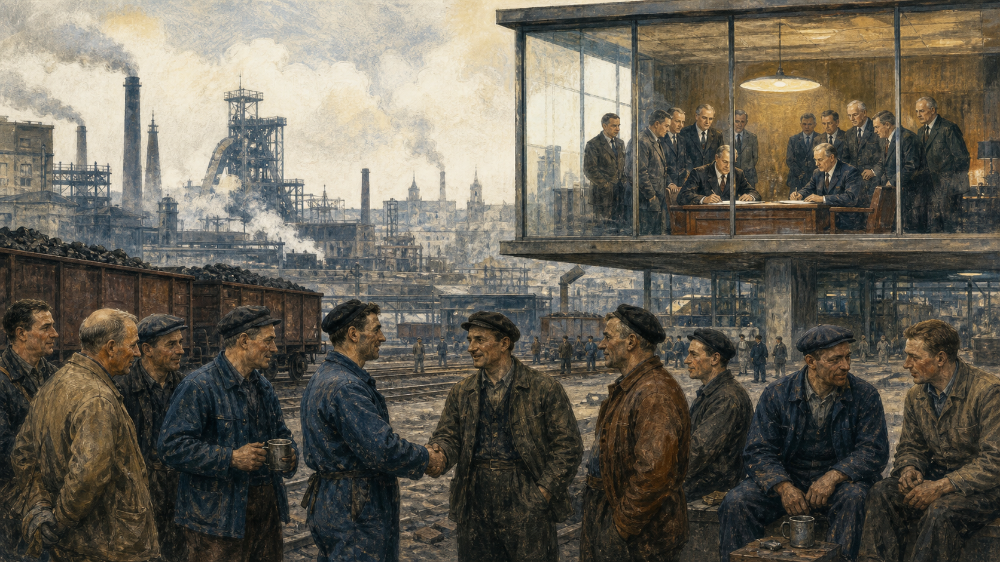

关键地点关系
1950年5月9日下午，法国外交部时钟厅里，记者们听到一项听起来很不浪漫的计划：法国和西德把煤与钢的生产交给一个共同机构管理，并邀请其他欧洲国家参加。没有新国旗，没有共同军队，甚至没有“欧洲联盟”这个名字。可煤是工厂的燃料，钢是铁路、机器和坦克的骨骼。法国外交部长舒曼宣读的提议，实际在问：如果昨天的敌人共同管理制造战争的关键材料，下一场战争会不会变得“不仅不可想象，而且在物质上不可能”？

和平为什么从煤和钢开始
欧洲并非一直走向联合。两次世界大战都在欧洲爆发，法德边境的阿尔萨斯—洛林、鲁尔煤钢区和萨尔地位反复成为安全问题。1945年之后，城市被炸毁，数千万人死亡或流离失所，纳粹大屠杀留下无法弥补的罪行。法国担心德国工业复兴再次变成军事威胁，美国又希望西欧恢复经济、共同面对苏联。
惩罚德国曾在一战后尝试过，结果没有带来持久和平。新的想法是把西德重新纳入制度，同时让其关键工业受共同监督。1951年，法国、西德、意大利、比利时、荷兰和卢森堡签署《巴黎条约》，建立欧洲煤钢共同体。六国不只是互相承诺合作，而是创设一个能作出约束决定的“高级机构”。
这一步很小，也很大胆。小，是因为只管两个行业；大胆，是因为政府同意某些决定不再由本国单独作出。矿主、钢厂和工人面对共同市场，关税和配额逐步取消。制度不会自动消除竞争，但它把冲突从边境和军营移到会议、法院和表格中。
读原始文件：宏大目标藏在具体办法里
《舒曼宣言》既有和平语言，也有生产、价格和机构设计。只引用理想句子，会把它写成道德演说；只看经济条款，又会错过设计者想重组法德关系的政治目的。欧洲联合从一开始就是安全与经济的双重工程。
英国没有加入最初共同体，它更重视英联邦、跨大西洋关系与议会主权；其他欧洲国家也有疑虑。这提醒我们，战后创伤并不会自然产生唯一答案。联合是若干政府在具体时刻作出的风险选择，它成功后才显得顺理成章。
共同市场进入餐桌和工厂
煤钢合作运行后，六国决定扩大范围。1957年《罗马条约》建立欧洲经济共同体，目标是逐步取消内部关税，让商品、服务、资本和人员跨境流动。边境关卡少一道章，工厂就能面向更大市场生产；学生和工人多一种去处，企业也多一批竞争者。所谓欧洲一体化，首先以卡车司机、奶农和会计能感到的方式推进。
共同农业政策尤其重要。战后食品短缺记忆仍近，法国拥有大量农民，德国工业品出口能力强。共同预算支持农业价格，既交换了法国对工业市场的接受，也提高粮食安全和农民收入。后来它造成过剩、环境压力和预算争议，显示一项妥协可以在一个时代解决问题，在另一个时代变成改革对象。
规则逐渐深入日常：产品安全、竞争政策、消费者权利、工作时间、环境标准。批评者把这些说成“布鲁塞尔规定黄瓜弯曲度”；支持者则说，共同市场若没有共同标准，企业仍要面对多套检测，强势公司还可能垄断市场。争论核心不是“要不要规则”，而是谁制定、依据什么授权、能否被公民理解和纠正。
欧洲法院通过判决确认共同体法律在适用领域能够直接产生权利，并在冲突时优先于成员国法律。这样的法理并非每份条约都用一句话写清，而是在案件中逐步建立。于是一个荷兰进口商或意大利消费者的诉讼，也可能改变欧洲权力结构。联合不是一次制宪时刻，而是条约、判决和政治妥协层层累积。
欧盟不是国家，也不只是国际组织
想象一项手机充电接口规则。欧盟委员会通常提出法案并监督执行；由各成员国部长组成的欧盟理事会代表政府立场；欧洲议会由公民直接选举，与理事会共同修法和表决；欧洲法院解释法律；欧洲理事会则由各国领导人确定重大方向。它不像一个国家有清楚的中央政府，也比普通国际组织更能直接影响个人与企业。
成员国没有把所有主权交出。教育、税收、医疗、国防等领域仍大量由国家决定；共同贸易政策、竞争规则和货币联盟中的部分权力则集中处理。有些领域需全体一致，有些采用“合格多数”，即须同时达到国家数与人口比例门槛。小国不能单独被大国碾过，大国也不能被许多极小国家轻易压倒。
“共享主权”听起来像漂亮口号，实际是一份分工表。单独一国在面对跨国企业、气候污染或外部贸易伙伴时，法律力量有限；共同制定规则能扩大影响。但共同决定也意味着本国政府可能在投票中失败，回国仍需执行。主权没有消失，而是从“永远自己决定”变成“同意按共同程序接受结果”。
共同预算让这份分工变成可以看见的钱。成员国按规则出资，资金用于农业、较贫困地区、科研、边境、学生交流和其他共同项目。一个国家可能在某年缴得多、取得少，却认为稳定市场和邻国发展带来长期利益；另一个国家取得基础设施资金，也必须遵守采购、审计和法治条件。预算争论因此不是简单的“谁占便宜”，而是二十七国怎样定义共同利益，以及净贡献与政治影响能否放在同一本账里。
普通公民并非只能每五年投一次欧洲议会。居民可以向议会请愿、向本国政府和议员施压、参与公共咨询，也可以在本国法院援引部分欧盟权利；法院还可能把欧盟法问题提交欧洲法院解释。程序很多并不等于人人都容易使用，法律语言、跨国媒体不足和游说资源差距仍会让有组织企业更有声音。民主赤字的改进不仅是再增加一个机构，也包括让现有决定更容易追踪、争论和追责。
联合的支持者
他们认为，在相互依赖世界里，名义上完全自主却无法影响结果，不是真正主权；共同规则让欧洲国家获得集体行动能力。
怀疑者
他们担心决策离选民太远，复杂机构让责任模糊：政策不受欢迎时，各国政府怪布鲁塞尔，欧盟机构又说是成员国决定。
这就是所谓“民主赤字”争论。欧洲议会权力不断增加，会议和文件也更透明，但选民往往按本国政治参加欧洲选举，媒体较少持续报道跨国立法。制度可以合法，却仍显遥远。欧盟能否长久，不只取决于规则有效，也取决于公民是否知道谁作了决定、如何让他下台或改变政策。
护照检查消失以后
1985年，五个国家在卢森堡小镇申根附近签署协议，计划逐步取消内部边境检查。后来申根区扩大，开车从法国到德国常常只见一块路牌，不必在国界排队。边境居民可以住在一国、到另一国上班；学生交换和廉价旅行让“欧洲”成为一代人的生活经验，而不只是一张政治地图。
内部边界开放，要求共同管理外部边界、签证和警务信息。一个国家放谁进入，可能影响所有参加国。难民危机、恐怖袭击或疫情发生时，一些国家恢复临时检查，说明开放边界依赖信任：各国相信邻居会执行共同规则，也相信危机负担不会全落在最前线国家。
1989年柏林墙开放、东欧共产主义政权转型后，“欧洲回归”成为强烈愿望。1995年奥地利、芬兰和瑞典加入；2004年十国加入，其中多数来自中东欧；此后保加利亚、罗马尼亚和克罗地亚也成为成员。扩员巩固民主和市场改革，资金改善道路与城市，人员自由流动提供工作和教育机会。
扩员也改变内部力量。西部企业获得新市场和劳动力，东部年轻人口外流；一些西部居民担心工资竞争，一些东部居民认为自己被当作廉价工人和次等成员。共同规则要求候选国改革司法、经济和行政，但入盟后如何持续维护法治，变成更难的问题。欧盟可以暂停资金、启动程序，却很难像一个国家那样直接更换成员国政府。
父子暂停一下
如果取消边境检查能让多数人更自由，却要求边境国家承担更多难民接待责任，其他成员应怎样分担？自由流动是一项个人权利，还是以国家互信为条件的政策？
口袋里的欧元，拿走了哪把工具
1992年签署的《马斯特里赫特条约》建立“欧洲联盟”，规划经济与货币联盟，也引入欧盟公民身份。1999年欧元先用于账目和金融市场，2002年纸币硬币进入钱包。游客不再频繁换钱，企业减少汇率风险，价格更易比较。共同货币让联合变得可触摸：一枚硬币一面是共同图案，一面保留国家图案。
但使用同一种货币意味着不能各自调整利率或让本币贬值。欧洲中央银行为整个欧元区设定货币政策，各国仍自行管理大部分预算。经济结构不同的国家受到同一利率影响可能相反：德国出口旺盛时，希腊可能正需刺激；一国银行危机又会通过共同金融系统传到别国。
2009年后，希腊债务危机暴露这座房子的缺梁。援助贷款防止违约和欧元区瓦解，却附带削减支出、加税和改革条件。债权国选民问：为什么替别国过去的借贷买单？希腊家庭问：为什么没有投票权的外部机构能决定工资、养老金和医院预算？双方都用“责任”一词，却指向不同对象。
北方债权叙事
共同货币需要可信规则；若一国超支总由他国救助，未来政府会冒更大风险。
危机国家叙事
贷款也救助了跨国银行，紧缩使经济更深衰退；若没有共同财政分担，货币联盟把调整成本压给普通人。
后来欧盟建立更强的银行监督、危机基金和复苏工具，但根本张力仍在：共同货币需要一定共同财政与政治信任，而纳税和支出又是国家民主最核心的权力。欧元不是一项完成的技术工程，而是一份每天续签的政治承诺。
危机像压力测试，也像放大镜
欧洲一体化常在危机中前进：问题暴露制度缺口，成员国才愿补上一块权力。但危机也可能使彼此不信任。2015年前后，大量逃离叙利亚战争及其他冲突的人抵达欧洲，地中海前线国家承受巨大压力。德国接纳大批申请者，另一些成员拒绝强制分担。人道义务、边境控制、社会容量与国内政治同时碰撞。
2016年英国公投决定离开欧盟，2020年正式退出。脱欧证明成员资格不是不可逆，也打破“联合只会越来越深”的想象。支持离开者强调拿回法律、边境和预算控制；反对者强调单一市场便利、国际影响和北爱尔兰和平安排。投票给出方向，却没有自动回答要离多远、代价由谁承担。
新冠疫情初期，成员国一度关闭边界、争夺医疗物资，像是共同体退回国家本能；随后又共同采购疫苗，并以前所未有的共同借债支持复苏。两种反应都是真实欧盟：国家在危险来临时首先对本国选民负责，也发现单独行动无法解决跨境问题。
2022年俄罗斯全面入侵乌克兰后，欧盟实施多轮制裁、接纳难民、提供资金与武器支持，并重新讨论能源依赖和防务能力。成员国对威胁感受、援助规模与战争终局仍有差异。危机没有把二十七国熔成一个国家，却迫使它们一次次回答：哪些风险必须共同承担，哪些决定仍应保留否决权。
父子暂停一下
危机时快速决策很重要，但绕过漫长议会讨论可能削弱民主。跨国共同体应怎样同时获得速度与授权？一次临时共同借债，会不会悄悄改变长期权力结构？
没有一支欧洲军队，规则也能越过海洋
欧盟常被说成军事侏儒、经济巨人。它没有一支由“欧盟政府”统一指挥的常备军，外交和安全决策常需高度共识；多数成员同时依赖北约集体防务。但拥有庞大单一市场，使欧盟能通过准入条件影响全球企业。想把商品和数字服务卖给数亿消费者，往往必须符合欧洲的隐私、安全、竞争和环境规则。
通用数据保护条例让个人获得数据访问、删除等权利，并对违规企业设高额罚款；竞争机构可审查大型合并、处罚垄断行为；碳边境机制试图让进口产品承担与欧洲生产者相近的碳成本。支持者称这是以市场力量保护公共利益，批评者则认为复杂规则会增加中小企业成本，或把欧洲偏好强加给贸易伙伴。
规则权力依赖市场吸引力和内部团结。若经济增长长期疲弱，企业可能减少投资；若成员国执行不一致，标准便失去可信度；若规则制定缺少发展中国家参与，绿色和数字政策也可能被视为新贸易壁垒。法律语言中性的外表之下，始终有利益分配。
这使欧盟成为一种特殊的大国：它最擅长的不是命令，而是定义“正常交易需要满足什么条件”。这种力量较少引人注目，却进入手机提示、食品标签和汽车排放。它也需要民主约束，因为任何能改变全球企业行为的规则制定者，都必须回答谁有发言权。
欧洲人身份，不会替代所有故乡
条约可以创造欧盟公民身份，不能命令人产生归属感。一个人可以同时是加泰罗尼亚人、西班牙人和欧洲人，也可以只在旅行或足球赛时想起其中一层。欧洲旗、共同护照和交换计划提供符号与经验，各国学校、语言、福利制度和家庭记忆仍更深地塑造日常。
这种多层身份并非失败。欧盟的设计本就不是消灭国家，而是让国家在部分领域共同治理。问题在于，团结需要分担成本：富裕地区为何向较贫穷地区转移资金？能源价格上涨时谁先得到补助？难民应在哪里安置？若“欧洲”只意味着廉价旅行和消费便利，一旦需要牺牲便会迅速变薄。
东欧成员对苏联统治的记忆使其更警惕俄罗斯，南欧国家更关注地中海和失业，北欧重视开放制度与财政审慎，法德则常被期待提供推动力。把“欧洲立场”写成一个人的意见会掩盖谈判。共同决定通常是多种历史记忆暂时重叠的结果。
欧盟也面对排除问题。谁能成为“欧洲人”？地理、宗教、民主标准、经济能力和政治意愿都曾进入讨论。候选国等待多年，邻国可能参加市场或安全合作却无投票权。每一次扩大都同时承诺和平与制造新外边界。地图上的圈越大，如何共同决定便越困难。
加入欧盟也不是通过一次考试便永久毕业。候选国要把大量共同法律写入本国制度，改革法院、竞争规则、边境管理和公共采购；入盟后，委员会、其他成员国、欧洲议会和法院仍会监督执行。争议在于，当一个成员国被指削弱司法独立或媒体多元时，欧盟究竟是在保护共同承诺，还是越过国家民主。暂停资金、诉诸法院和要求全体一致的政治制裁各有力度，也各可能伤及普通公民。
交出去的主权，还能不能拿回来
截至2026年8月，欧盟有27个成员国，欧洲议会由公民每五年直接选举，保加利亚在2026年1月采用欧元后成为欧元区第21个成员。乌克兰、摩尔多瓦及西巴尔干等候选国的入盟进程仍在变化，战争、法治改革、预算与机构承载力都会影响速度，因此不能把政治承诺写成确定日期。
“交出主权”容易让人想到把钥匙永久交给陌生人。实际更像共同签订一套房屋公约：每家仍拥有自己的房间，却同意走廊、防火和电梯按共同规则管理。退出在法律上可能，修改规则也有程序，但任何成员都不能在享受共同市场好处时随意忽略共同义务。承诺之所以有价值，正因为反悔会有成本。
欧盟既不是通往“欧洲合众国”的直线，也不是随时会散架的临时俱乐部。它更像不断维修的桥：桥墩仍属于各国，桥面由共同法律连接，车辆每天通过；修一处可能让另一处承重改变。它的成就包括把法德战争从可想象的政策工具变成极遥远之事，也包括扩大个人跨境权利；它的缺陷则包括决策复杂、责任模糊和团结不均。
保加利亚在2026年采用欧元，是这种“未完成”最直观的例子。加入共同货币不是换一套纸币，而是多年满足通胀、财政、利率、汇率和法律条件，并准备银行、商店和民众同时转换。支持者强调交易成本和金融稳定，怀疑者担心价格、政策自主和对机构的信任。欧盟的每一步深化都把技术标准变成政治选择：谁承担调整成本，谁来确认条件满足，公民能否理解并影响过程。
扩大和深化还会彼此拉扯。成员越多，欧盟在贸易、人口和安全上越有分量，历史上被排除在西欧制度之外的国家也获得更稳定的归属；但需要一致同意的领域更容易停顿，共同预算和议会席位更难分配。若先修改决策规则，小国担心声音被削弱；若保留所有否决，任何一国又可能把全体政策当作国内谈判筹码。欧盟没有一张最终蓝图，只能一边接纳新成员，一边继续重写共同生活的操作说明；每次改写，都要重新争取公民的理解与授权。
回到1950年的时钟厅，煤和钢看似比旗帜乏味，却正因为具体而可靠。和平不是要求法国人忘记法国、德国人忘记德国，而是让彼此利益和规则密到战争会毁掉自己的生活。欧盟最值得少年人理解的，不是“联合一定更好”，而是主权可以被重新组织：有时独自决定更自由，有时共同约束反而让每个人拥有更大的行动空间。答案不会写在地图颜色里，只能在一次次公开争论和可纠正的制度中寻找。
关灯前，聊六个没有标准答案的问题
- 法德和解主要来自共同制度、战争记忆、美国保护，还是经济繁荣？
- 国家在共同投票中失败后仍执行结果，是失去主权还是实践主权？
- 欧元带来的旅行与贸易便利，是否值得放弃本国独立利率和汇率？
- 欧盟通过市场规模让全球企业遵守其规则，这是一种公共治理还是权力扩张？
- 成员国违反共同法治标准时，欧盟应处罚到什么程度才不伤害当地普通人？
- 如果你同时认同城市、国家和欧洲，三者发生冲突时应由哪一层优先？
继续追索：档案与可靠来源
- 欧盟官方：History of the EU——从战后到当代的条约与扩员时间线。
- 《舒曼宣言》全文——煤钢共同管理方案的原始文本。
- EUR-Lex：现行欧盟条约——《欧洲联盟条约》与《欧盟运行条约》权威文本。
- 欧盟机构与机关说明——委员会、议会、理事会和法院的职责。
- 欧盟理事会：条约如何塑造两大理事会——制度沿革与权力变化。
- 欧洲中央银行：The euro——共同货币历史、成员和纸币制度。
- 欧盟委员会：EU countries and the euro——截至2026年的欧元区官方名单。
- 欧盟委员会：Schengen Area——内部边界与共同外部边境规则。
- 欧洲议会：Fact Sheets on the European Union——制度、政策与历史的研究型资料库。
- 欧盟法院：Court of Justice——判决数据库与法院职责。